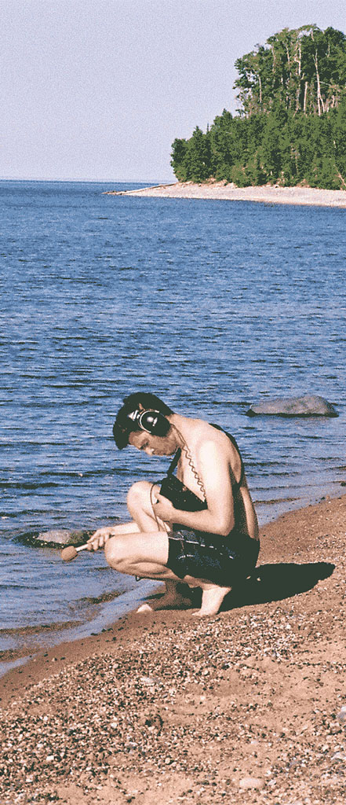
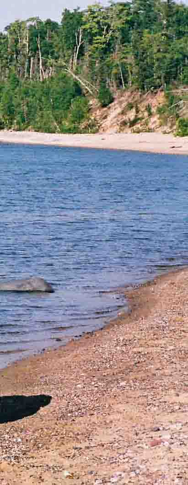

mitch
With
a little something here and there, yeah sure why not? Just a lil somethin from scratch who knew that a person could get so far? Lord knows I didn't try but god damn that's a miracle!
Anywho, as I'm sure you can guess at this point, my name is Mitch and I'm just trying out this sweet new site that I've arranged for myself. I'm super happy to find that it's actually working (wow). Generally, you'll find me on my computer workin' emails, but today I said 'nah, how bout the web?'. Now back to reality, hopefully this page will help encompass my wide range of fascinations.
I love playing the flute and listeing to the ocean breeze (if only Minneapolis wasn't so far, amiright?). I remember the first time I went to the Pacific at 8am in late November, feet deep in the sand.. oh boy that's my jam. Just listening to a good conch shell really brings me back. The pic to the left is me at Lake Superior (photo cred: Alex Munro) though, NOT the Pacific Ocean.
My favorite part of being a millenial is how much computer is around me in my life. It really keeps me in check, but often enough you'll find me on it 'checked-out'. That's like the one thing I don't heavy resonate with being a millenial. Like, I want to be as tapped in/on as possible, but also let myself get distracted when need be. Often I'm just looking to get excited and look for things that stick.
Maybe this is just a way for me to free write, or maybe it's a better way for me to give you an idea of who i am . Or maybe this is just a better way for me to find out who i am . I don't want to take up too much of your time reading this, go ahead and explore the nooks and cranny's on the page. If you have any other questions, don't hesitate to get in touch me with and we can talk more aobut how i can help you.
best wishes,
mitch stahlmann
